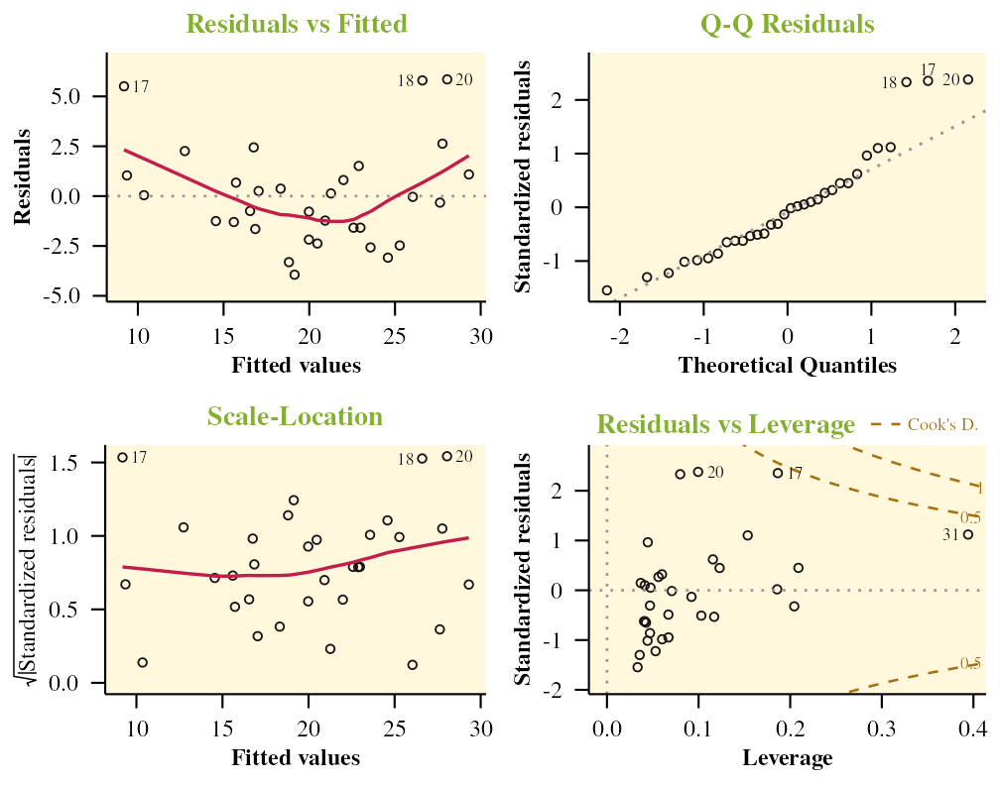
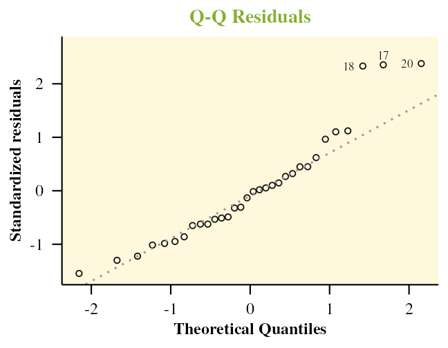
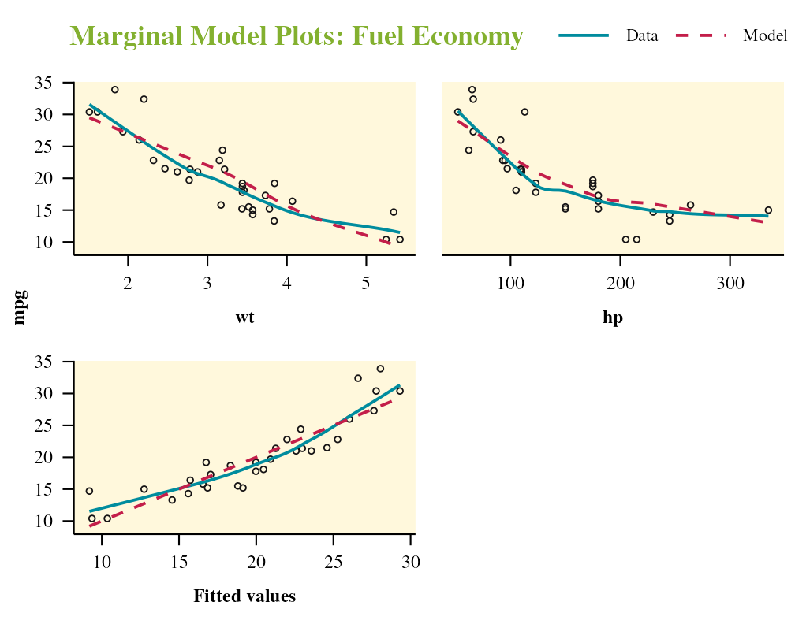

snazzieR has four functions for checking a fitted regression: two plots and two tables. This article runs all four on one model.
The tables below use latex = FALSE because this page is
HTML. In a PDF report, leave latex at its default and the
same calls return LaTeX tables.
Diagnostic plots
diagnostics.plots() draws the four panels of
plot(model) as ggplots in
snazzieR.theme().
diagnostics.plots(model)
Each panel labels its three most extreme observations with their row
numbers. id.n changes how many are labelled, and
cook.levels sets the Cook’s distance contours in the
leverage panel.
The result is a list, so one panel can be drawn or modified by itself:
diagnostics.plots(model)$plots$qq
The four panels are named residuals.fitted,
qq, scale.location and
residuals.leverage.
Marginal model plots
marginal.model.plots() plots the response against each
numeric term and against the fitted values. Every panel carries two
loess smooths: one of the data (solid) and one of the model’s fitted
values (dashed). Where the two curves separate, the model misses part of
the relationship with that variable.
marginal.model.plots(model, title = "Marginal Model Plots: Fuel Economy")
The smooths use the same loess settings as car::mmps().
Factors and interaction terms are skipped, as they are in car.
Unusual observations
unusual.points.table() lists the observations that meet
at least one of these criteria:
| Flag | Criterion |
|---|---|
| High leverage | leverage above 2(p + 1)/n, twice the average |
| Outlier | standardized residual beyond ±2 |
| Influential | Cook’s distance above 4/(n − 2) |
| Bad leverage | high leverage and an outlier |
unusual.points.table(model, latex = FALSE, id = rownames(mtcars))## == Unusual Observations ==
##
##
## Obs Observed Fitted Leverage Std. Resid. Cook's D Flags
## -------------------- --------- ------- --------- ------------ --------- ---------------------------
## Chrysler Imperial 14.7 9.192 0.1865 2.355 0.4236 outlier, influential
## Maserati Bora 15 12.74 0.3942 1.12 0.272 high leverage, influential
## Toyota Corolla 33.9 28.05 0.0995 2.379 0.2084 outlier, influential
## Fiat 128 32.4 26.6 0.07991 2.332 0.1574 outlier, influential
## Lincoln Continental 10.4 9.363 0.209 0.4497 0.01781 high leverage
## Ford Pantera L 15.8 16.55 0.2044 -0.3227 0.00892 high leverage
##
## Flags: high leverage = h > 0.188 = 2(3)/32 = 2(p+1)/n; outlier = |std. resid.| > 2; influential = Cook's D > 0.133; bad leverage = both.
## Outliers: 3 of 32 observations have |std. resid.| > 2; about 1.5 would be expected by chance.id takes one label per row of the data, or the name of a
column that holds the labels. Without it, observations are identified by
the row names of the data.
Three arguments narrow the table. flag chooses which
criteria count, n.max keeps the rows with the largest
Cook’s distances, and leverage.cutoff,
residual.cutoff and cook.cutoff replace the
default thresholds.
unusual.points.table(
model,
latex = FALSE,
id = rownames(mtcars),
flag = c("leverage", "outlier"),
n.max = 3
)## == Unusual Observations ==
##
##
## Obs Observed Fitted Leverage Std. Resid. Cook's D Flags
## ------------------ --------- ------- --------- ------------ --------- --------------
## Chrysler Imperial 14.7 9.192 0.1865 2.355 0.4236 outlier
## Maserati Bora 15 12.74 0.3942 1.12 0.272 high leverage
## Toyota Corolla 33.9 28.05 0.0995 2.379 0.2084 outlier
##
## Flags: high leverage = h > 0.188 = 2(3)/32 = 2(p+1)/n; outlier = |std. resid.| > 2; bad leverage = both.
## Outliers: 3 of 32 observations have |std. resid.| > 2; about 1.5 would be expected by chance.
## Showing the 3 with the largest Cook's D of 6 flagged observations.Collinearity
VIF.table() reports a variance inflation factor for each
term, sorted from highest to lowest. A term is flagged moderate above 5
and severe above 10; moderate and severe
change those cutoffs.
## == Variance Inflation Factors ==
##
##
## Term VIF 1/VIF GVIF adj. GVIF Flag
## ----- ------ ------- ------ --------------- ---------
## disp 7.985 0.1252 7.985 2.826 (df = 1) moderate
## wt 6.917 0.1446 6.917 2.63 (df = 1) moderate
## hp 5.167 0.1935 5.167 2.273 (df = 1) moderate
## qsec 3.133 0.3192 3.133 1.77 (df = 1)
##
## Moderate: VIF > 5. Severe: VIF > 10. Mean VIF = 5.8.
## adj. GVIF = GVIF^(1/(2 Df)).A factor has several coefficients and therefore no ordinary VIF. For
such terms the table reports the generalized VIF of Fox and Monette
(1992), and the VIF column shows the adjusted GVIF squared so that it
stays on the same scale as the other rows. The values match
car::vif().
## == Variance Inflation Factors ==
##
##
## Term VIF 1/VIF GVIF adj. GVIF Flag
## ------------ ------ ------- ------ --------------- -----
## hp 3.496 0.286 3.496 1.87 (df = 1)
## wt 2.581 0.3875 2.581 1.607 (df = 1)
## factor(cyl) 2.26 0.4426 5.106 1.503 (df = 2)
##
## Moderate: VIF > 5. Severe: VIF > 10. Mean VIF = 2.78.
## adj. GVIF = GVIF^(1/(2 Df)). For multi-df terms, VIF = (adj. GVIF)^2.cols limits the table to the columns you want:
## == Variance Inflation Factors ==
##
##
## Term VIF 1/VIF Flag
## ----- ------ ------- ---------
## disp 7.985 0.1252 moderate
## wt 6.917 0.1446 moderate
## hp 5.167 0.1935 moderate
## qsec 3.133 0.3192
##
## Moderate: VIF > 5. Severe: VIF > 10. Mean VIF = 5.8.Running chunks interactively
With latex = TRUE, both tables return LaTeX. If you run
such a chunk with the “Run” button in RStudio or Positron, snazzieR
shows an HTML preview of the table; knitting the document produces the
LaTeX. ?snazzieR_table describes the
snazzieR.preview option that controls this.